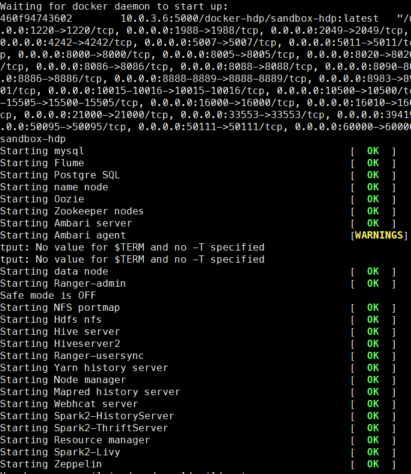

Hortonworks Sandbox是一个集成了HDP产品，它里面包含了所有HDP组件，并且已经部署完成。通过使用Hortonworks的Sandbox docker容器，可以非常方便快捷的完成大数据平台的部署，时间从过去的几天缩短为几分钟。
在部署过程中遇到的问题，下面做个总结，其他简要的步骤省去。
docker镜像仓库镜像起始大小设置过低
当我们将sandbox-hdp压缩包加载到docker镜像仓库时，有可能会出现下面错误
1
failed to register layer: ApplyLayer exit status 1 stdout: stderr: write /usr/share/texmf/fonts/tfm/vntex/urwvn/uplb8v.tfm: no space left on device
出现这个错误，由于我们安装docker时，默认的设备驱动类型为devicemapper，默认的基础镜像大小为10G，而sandbox-hdp有12G，所以会出现上述错误。
- 解决方案
1 | vim /etc/systemd/system/docker.service.d/docker.conf |
此时我们docker info | grep Base可以看得Base Device Size: 53.69 GB
更详细的步骤可以参考Hortonworks官网提供的方法How to modify the default Docker configuration on CentOS 7 to import HDP sandbox
docker-proxy不在path路径
1 | /usr/bin/docker-current: Error response from daemon: driver failed programming external connectivity on endpoint sandbox-hdp (5bb2a96a6ea2245764a2ec4a2542fa0d0cde8329348cfb1a9a3b0f8a69b9d0d3): exec: "docker-proxy": executable file not found in $PATH |
- 解决方案
1 | ln -s ../../usr/libexec/docker/docker-proxy-current /usr/bin/docker-proxy |
docker-runc
1 | Error response from daemon: shim error: docker-runc not installed on system |
- 解决方案
1 | ln -s /usr/libexec/docker/docker-runc-current /usr/bin/docker-runc |
oci runtime error
1 | Error response from daemon: invalid header field value "oci runtime error: container_linux.go:247: starting container process caused \"process_linux.go:339: running prestart hook 1 caused \\\"error running hook: exit status 1, stdout: , stderr: \\\"\"\n" |
- 解决方案
1 | vim /etc/systemd/system/docker.service.d/docker.conf |
将cgroups改为systemd即解决上述问题。
成功运行
经过一系列的错误。当我们运行start_sandbox-hdp.sh脚本，出现下图所示日志时即表示启动成功，现在就可以愉快在大数据平台上进行测试开发了。
